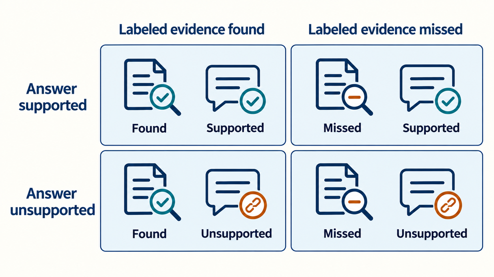
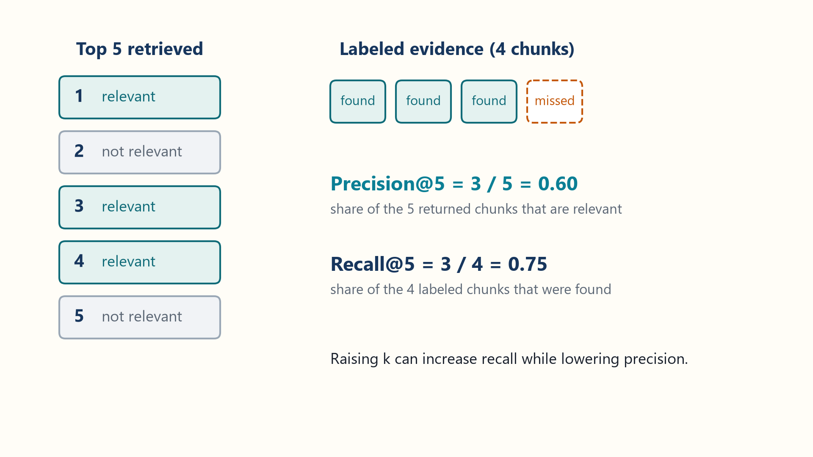

7 Evaluating answers against retrieved evidence
An incorrect RAG answer can result from missing evidence, evidence omitted from the request, or a model misreading the supplied passages. To support this evaluation, the application must log source preparation and, for each request, retain the selected passages, submitted request, and returned answer. Evaluating retrieval and generation separately helps distinguish these failures. Testing the complete pipeline then shows whether a change improves the final response.
The diagnostic path identifies whether the retriever found the needed evidence, whether generation used it faithfully, and whether the complete answer met the task.
7.1 RAG quality measures
The RAG triad describes three aspects of RAG quality: context relevance, faithfulness, and answer relevance. TruLens documents the triad using groundedness for the answer-support check called faithfulness here.1
- Context relevance: Whether the retrieved passages are useful for the question.
- Faithfulness: Whether the answer’s claims are supported by the supplied context.
- Answer relevance: Whether the response addresses the requested information rather than merely discussing the same topic.
A faithful answer can still omit information the question requests. An answer can also address the question directly while adding claims that its context does not support. Separate scores show these differences. ARES2 is a research framework that measures these three dimensions with trained judges and a human-labeled evaluation set. The RAG triad describes what is assessed. A framework such as ARES supplies a procedure for assessing it.
When a RAG answer is wrong, the visible symptom suggests where to begin inspecting the records. Several stages can produce the same symptom:
| Symptom | Possible failing stage | First evidence to inspect |
|---|---|---|
| Relevant source never appears | Source collection, parsing, chunking, indexing, query, filtering, or retrieval | Source text, parsed chunks, index entries, access rules, and candidate list |
| Relevant source appears but is ranked low | Query, embedding, lexical signal, filters, or reranker | Per-stage scores and query rewrite |
| Correct evidence selected, unsupported answer | Request assembly, generation, or answer checks | Actual submitted request, claim support, and citations |
| Supported answer does not answer question | Task prompt or question interpretation | Question, answer-relevance rubric, and route |

The grid groups runs by two observations: whether retrieval found at least one labeled supporting unit and whether the answer is supported by the context actually submitted to the model. It separates an evidence miss from an answer-support problem.
A retrieved supporting chunk may be dropped when the request is assembled, so an evidence hit does not guarantee a supported answer. A label miss can still accompany a supported answer when another valid passage supplies the fact or the answer reports an evidence gap. The saved candidates, submitted context, and answer claims help distinguish these cases. A cell alone does not identify a cause.
This two-axis grid is not the three-part RAG triad. Its evidence-hit check records whether at least one labeled supporting unit appears among the candidates. Context relevance also asks how useful the retrieved passages are for the question. The grid’s answer-support check concerns faithfulness. Answer relevance and correctness still need separate assessment. Section 7.2 measures retrieved evidence, Section 7.3 measures answers, and Section 7.4 compares component results with complete-pipeline outcomes.
7.2 Retrieval metrics
Retrieval evaluation assesses the ranked list of source items returned for a question, such as chunks or pages. The metrics below score this list against evidence labels. Scores from individual questions can then be summarized across an evaluation set.
Retrieval hit at k (Hit@k): A score of 1 when at least one of the first \(k\) retrieved results is a labeled supporting unit, and 0 when none is found. Here, \(k\) is the chosen number of result positions to score, such as five. The evaluation record identifies the ranked list: search candidates or passages selected after reranking. The model later uses selected passages to generate an answer.
For one question, let \(E\) be the labeled evidence set and \(R_k\) the set of distinct source units in the first \(k\) result positions. Here, \(k\) is a positive integer, and both sets use the same unit, such as a chunk ID. Hit@k is one when the sets intersect. It records at least one evidence hit, not whether all parts of the question can be answered.
\[ \mathrm{hit}@k=\mathbb{1}(R_k\cap E\ne\emptyset) \tag{7.1}\]
Here, \(R_k\) contains the top-k retrieved source units, \(E\) contains one or more acceptable evidence units, and the indicator returns one for a nonempty intersection. The metric checks evidence presence but ignores how many irrelevant chunks were also returned.
Precision@k and Recall@k reuse the same labeled sets but answer different questions. Precision measures how concentrated the top-k results are with relevant evidence, while recall measures how much of all labeled evidence was recovered.
\[ \mathrm{Precision}@k=\frac{\lvert R_k\cap E\rvert}{k} \tag{7.2}\]
For retrieval precision, the numerator is the number of units shared by \(R_k\) and \(E\), and the denominator is the chosen cutoff \(k\). This convention counts unfilled result positions as misses if fewer than \(k\) units return. Precision over the results actually returned instead divides by their count. The evaluation record must distinguish these conventions. Each unit ID counts at most once. If it occurs repeatedly within the first \(k\) positions, repeated copies occupy positions without adding matches.
\[ \mathrm{Recall}@k=\frac{\lvert R_k\cap E\rvert}{\lvert E\rvert} \tag{7.3}\]
For retrieval recall, the numerator is unchanged but the denominator is the number of labeled relevant units in \(E\). This calculation requires at least one labeled unit. An empty label set produces an unscored recall result unless the evaluation defines another convention. Incomplete labels can mark a useful alternative source as irrelevant and fail to reveal evidence that is still missing.
Example 7.1: Retrieval precision and recall at five
For one question, the reference labels identify four relevant chunks in the document collection. The retriever returns five chunks, three of which match those labels. The fourth labeled chunk is elsewhere in the collection and does not appear in these five results.
- The relevant intersection contains three chunks.
- Precision@5 = 3 / 5 = 0.60.
- Recall@5 = 3 / 4 = 0.75.
- Hit@5 = 1, because at least one labeled chunk was found. It is not 3: three is the count of relevant returned chunks.
Result: Three of the five returned chunks are relevant (60 percent), and three of the four labeled relevant chunks are recovered (75 percent). These percentages count chunks, not words, tokens, or information.
Interpretation: Increasing k may raise recall while lowering precision and consuming more context. The downstream generator determines whether the extra evidence helps or distracts.

Mean Reciprocal Rank (MRR): A retrieval metric that gives more credit when the first relevant result appears earlier in the ranked list. Here a result is a retrieved source unit, such as a chunk or page, assessed to a recorded depth.3 Unlike Hit@k, which records whether any labeled support was found, MRR measures how early the first relevant result appears across questions. Both measure the retrieval part of evaluation. Neither replaces the RAG triad or scores the generated answer.
\[ MRR=\frac{1}{N}\sum_{i=1}^{N}\begin{cases}\frac{1}{r_i},&\text{if a relevant result is retrieved}\\0,&\text{otherwise}\end{cases} \tag{7.4}\]
Here, \(N\) is the positive number of evaluated questions and \(r_i\) is the rank of the first relevant result for question \(i\). A question with no relevant result within the assessed depth contributes zero. The assessment depth is recorded because a miss within five results does not mean no evidence exists farther down the list. Rank 1 contributes 1, rank 2 contributes 0.5, and later hits contribute less. MRR ignores additional relevant results after the first, so recall is also needed when an answer requires several passages.
Example 7.2: Hit@5 and reciprocal rank
For four questions, the first relevant pages appear at ranks 1, 2, and 5, while the fourth question has no relevant page in the evaluated list.
- The first three questions have Hit@5 = 1 and the missed question has Hit@5 = 0, so average Hit@5 = 3/4 = 0.75.
- Reciprocal-rank contributions are 1, 1/2, 1/5, and 0 for the miss.
- MRR = (1 + 0.5 + 0.2 + 0) / 4 = 0.425.
Result: The retriever finds evidence for three of the four questions by rank 5. The miss lowers average Hit@5. The miss and later first hits lower MRR.
Interpretation: Answer quality may still suffer when the relevant passage appears late or the context budget admits only a few passages. Hit@5 alone hides the difference between rank 1 and rank 5.
Where do evidence labels come from?
An evaluation dataset can include annotations linking each question to supporting pages or passages. Where these are absent, domain experts can assign labels using the source documents and any reference citations. Synthetic question-passage pairs can supply candidate labels, but their claimed support still needs checking against the source. The evaluation record keeps the label-creation method and version.
Suppose a question is labeled with page 12 of a PDF. A returned chunk from that same document and page counts as a page hit. It does not show whether that chunk contains the needed fact. Scoring chunk-level precision or recall requires labels identifying the supporting chunks.
7.3 Answer metrics
Generation evaluation assesses the answers produced by the model. Answer metrics compare each answer with the question, the supplied evidence, and a trusted result or grading criteria as appropriate. Retrieval metrics assess the ranked source results. Retrieval evaluation and generation evaluation are assessment processes. An evaluation framework, such as ARES, specifies how the checks are run and scored.
Correctness: Whether the answer matches a trusted result or expert judgment. Faithfulness checks whether the answer’s claims are supported by the context supplied to the model. Citation support: Whether the exact evidence attached to each claim supports that claim. These measurements answer different questions. FActScore4 demonstrates how long answers can be split into atomic factual claims for support checks. Its reported results do not remove the need for local labels and human review. A model judge can help with open text, but deterministic numeric comparison and source-page checks should remain code-based where possible.
The evaluator checks each answer in stages so these measurements remain separate:
- Normalize the answer form only as much as the task permits, preserving units and qualifiers.
- Score exact or numeric correctness when a verifiable ground truth exists.
- Decompose longer answers into claims and identify the cited or supporting chunks.
- Grade whether each material claim is supported, contradicted, or unsupported by the supplied evidence.
- Score whether the answer addresses the user’s actual question, separately from its support score.
For the question, “What were revenue and operating margin?” the retrieved page states that revenue was $12 million and operating margin was 15%. An answer says, “Revenue was $12 million, operating margin was 18%, and the company opened a Berlin office.” Its three claims can be assessed separately. The revenue claim is correct and supported. The margin claim is incorrect and contradicted by the page. A trusted company record may confirm the Berlin office, but that fact was not supplied in the request. That claim can be correct in the wider world while remaining unfaithful to the evidence given to the model. These labels keep correctness and context support separate. The saved retrieval results and submitted context help investigate why a claim lacks support.
Es et al. propose the RAGAS framework for automated RAG evaluation.5 The paper describes model-based checks for context relevance, faithfulness, and answer relevance that do not require a reference answer for each question. RAGAS supplies a scoring procedure for these quality dimensions. The ragas software library implements these evaluations. Its faithfulness metric first splits an answer into claims, then asks an evaluator model whether each follows from the supplied passages. The score is the supported share of the extracted claims. For the three-claim example above, a reviewer who finds support only for revenue records 1/3, about 0.33. That illustrative support score does not measure whether the question was fully answered. The versioned guide Migrating from Ragas 0.3 to 0.46 describes the v0.4.1 interface used below.
See Example 7.3 for the implementation.
Example 7.3: ragas v0.4.1 scores the answer against selected passages, assuming the request included them unchanged.
The caller supplies the Chapter 6 trace and a compatible evaluator model. This example uses ragas’s score method in an ordinary Python script. The trace’s selected passages are the scoring context because Chapter 6 requires its request renderer to preserve them unchanged. The saved model_request lets a review check that assumption. A different renderer that drops or changes passages needs a record of the context actually submitted. A trace with no generated answer returns an unscored result without calling the evaluator.
import math
import ragas
from ragas.metrics.collections import Faithfulness
def score_faithfulness(trace, evaluator_llm):
status = trace.get("status")
if status == "insufficient_evidence":
return {"ragas_version": ragas.__version__,
"faithfulness": None,
"faithfulness_reason": "No answer was generated."}
if status != "answered":
raise ValueError("Unknown answer status")
for field in ("question", "answer", "model_request"):
if not isinstance(trace.get(field), str) or not trace[field].strip():
raise ValueError(f"Missing text field: {field}")
contexts = [item["chunk_text"] for item in trace["retrieved"]]
if not contexts or any(not isinstance(text, str) or not text.strip()
for text in contexts):
raise ValueError("An answered RAG trace needs evidence text")
faithfulness = Faithfulness(llm=evaluator_llm)
result = faithfulness.score(
user_input=trace["question"],
response=trace["answer"],
retrieved_contexts=contexts,
)
score = float(result.value)
if not math.isfinite(score) or not 0 <= score <= 1:
raise ValueError("Faithfulness score must be finite and between 0 and 1")
return {
"ragas_version": ragas.__version__,
"faithfulness": score,
"faithfulness_reason": result.reason,
}The function returns the library version, score, and optional reason. Unknown statuses, missing required text fields, and non-finite or out-of-range scores raise ValueError. Malformed retrieved records and evaluator failures propagate to the caller rather than becoming zero faithfulness. The experiment record also needs the evaluator model and metric configuration, which this function does not collect. A human-audited subset and deterministic citation checks remain necessary because the model’s claim extraction and support judgments can be wrong.
Faithfulness is context-relative
A statement can be true in the world but unfaithful to the supplied evidence. A grounded product must either retrieve support or label the statement as external knowledge. It cannot silently substitute model memory for retrieved reference data.
Deterministic checks are preferable for exact numbers, identifiers, schema rules, and citation membership. Human or model judgment is useful for paraphrase, completeness, and open-ended support, but the judge receives the same supplied evidence and a fixed rubric. A model judge also needs its agreement with human labels checked (Section 4.7). Per-claim results expose partial support that an answer-level label alone would hide.
7.4 Component contributions and improvements
Component evaluation measures one stage, such as retrieval precision or answer faithfulness with a fixed context. End-to-end evaluation measures final answer quality with retrieval, context selection, and generation running together.
A component score describes local performance. The contribution question is how complete-system results change when that component is removed or replaced. End-to-end tests also provide the final-output evidence needed for release decisions.
A stronger generator can mask weak retrieval on familiar questions by answering from weights. The comparison uses the same question set and saves each run’s retrieved identifiers, context text, and final outputs.
An ablation is an experiment that removes or replaces a component to test its contribution. The question set and remaining settings stay fixed. A controlled setting comparison uses the same principle when changing a value such as top-k rather than removing a component.
Holding the generator fixed while replacing retrieval, or holding retrieved context fixed while changing the prompt, helps isolate the effect of that change in the tested configuration. Repeated trials are needed when generation or grading varies.
Limitation: A higher retrieval score does not guarantee a better answer. A retriever may return more labeled evidence but also more distracting passages. The request’s context limit may then exclude a needed passage, or the generator may use the added text incorrectly.
In a retriever component test, the evaluator compares returned source units with labeled evidence. A generator’s answer from memory cannot improve that score. In a generator component test, the model receives a fixed evidence set so faithfulness changes are not confused with retrieval changes. End-to-end tests then catch interactions that component tests cannot reproduce. When a retriever broadens recall, it can add enough noise to lower answer accuracy: Amiraz et al.7 report that irrelevant passages can cause incorrect answers. Release evidence therefore connects each component change to the final outcome.
The retrieval scores, answer scores, and controlled comparisons above can suggest which stage to change. A one-change cycle targets one primary metric, changes one setting, and reruns the fixed evaluation set to measure the result. Changing chunk size, top-k, query rewriting, reranking, prompt, and model together would leave their individual contributions unresolved by that comparison.
A controlled RAG study can vary the generation prompt, generation model, top-k, or chunk size. A local hypothesis might predict that increasing k from 3 to 8 raises page Hit@k for multi-page answers while reducing faithfulness if irrelevant chunks enter the context. The resulting comparison retains the baseline and every changed setting. Before release, a promising component result must be checked on held-out cases. When both systems answer the same questions, the comparison keeps each question’s two results paired when estimating uncertainty, as in Section 4.8. Repeated trials are needed when retrieval, grading, or generation can vary.
| Change | Expected primary metric | Likely trade-off | Required trace evidence |
|---|---|---|---|
| Smaller chunks | Test whether precision improves | Incomplete claim context and more index entries | Chunk IDs, parent page, duplicate rate |
| Larger top-k | Test whether hit or recall improves | More context noise, cost, and latency | Ranked list, selected subset, token count |
| Hybrid retrieval | Test coverage of exact terms and paraphrases | Two searches and a rank-fusion choice | Lexical/vector scores and fusion rule |
| Reranking | Test whether relevant evidence ranks earlier | Additional model latency and cost | Candidate set, reranker scores, final ranks |
| Grounding prompt | Test faithfulness and citation support | Longer output or more refusals | Prompt version, citations, unsupported claims |
The best setting can vary by question type. A chunk size that works for a numeric table lookup may not work for a narrative explanation. Selecting a global default therefore requires results for each question or question type.
Before the run, the cycle states its hypothesis, the component it changes, the expected primary metric, and other expected effects. The evaluation set, labels, and protocol stay fixed unless a version change is part of the experiment.
Primary metrics alone are insufficient when changes trade recall for noise, quality for latency, or answer coverage for refusal safety. A guardrail metric tracks a property whose allowed limit constrains the change, such as maximum latency or minimum faithfulness. It is an evaluation criterion, distinct from a safety guardrail that checks or restricts an operation. The experiment specifies tolerated changes and reports important slices beside the target metric. Repeated trials estimate run-to-run variation, while resampling fixed results estimates uncertainty from the sampled cases.
7.5 FinanceBench evaluation trace
One evaluation row links a FinanceBench question to its retrieved pages, generated answer, and quality scores. Its financebench_id identifies the same question across the separate baseline and RAG runs.
- Load the question,
question_type, ground-truth answer, and one raw FinanceBench evidence item. Itsevidence_doc_nameis the dataset document ID andevidence_page_numis zero based.8 - Run the no-retrieval baseline and record response, refusal or confident-answer behavior, tokens, latency, and model version.
- Retrieve chunks and preserve document ID, one-based source page, chunk ID, rank, retrieval score, and chunk text.
- Add one to the raw evidence page and calculate page-hit@k against the retrieved chunks’ dataset document IDs and one-based source pages.
- Generate from the selected evidence and store cited pages plus the complete prompt version.
- Score answer correctness and faithfulness, and retain judge explanations and model version.
- Append the row to the per-question spreadsheet and aggregate by question type.
- Repeat after one controlled setting change and compare with the baseline row.
See Example 7.4 for the implementation.
Example 7.4: One experiment row keeps component and end-to-end evidence together.
This shortened row-building function receives a completed Chapter 6 trace, answer scores, token usage, measured latency, and a claim grader. It returns the evaluation row as a Python dictionary, retaining the ordered search candidates and selected chunks.
The calling runner must save the row in the per-question spreadsheet from step 7. The runner must also save a separate evaluation record, linked by both experiment_id and financebench_id, with the generation model version, prompt version, judge model and prompt versions, and judge explanations required by the experiment plan. The listing does not collect those fields.
This example requires exactly one raw FinanceBench evidence item and converts its zero-based page to the local one-based page. Here, page_hit_at_5 means that document-page pair appears among the first five selected chunks, not the first five distinct pages or every page needed by a multi-page answer. Labels covering several evidence pages require a corresponding extension of the record and metric.
def make_experiment_row(case, answer_trace, *, experiment_id,
correctness_score, faithfulness_score,
usage, elapsed_ms, grade_claims):
status = answer_trace.get("status")
if status not in {"answered", "insufficient_evidence"}:
raise ValueError("Unknown answer status")
if type(answer_trace.get("k")) is not int or answer_trace["k"] != 5:
raise ValueError("This experiment measures page hit among five chunks")
if len(case.evidence) != 1:
raise ValueError("This example requires one raw FinanceBench evidence item")
raw_evidence = case.evidence[0]
raw_page = raw_evidence["evidence_page_num"]
doc_id = raw_evidence["evidence_doc_name"]
if type(raw_page) is not int or raw_page < 0 or not isinstance(doc_id, str) or not doc_id:
raise ValueError("Evidence needs a document ID and zero-based page")
retrieved_pages = [
(item["doc_name"], item["source_page"])
for item in answer_trace["retrieved"]
]
evidence_page = (doc_id, raw_page + 1)
if status == "answered":
claim_results = grade_claims(
answer=answer_trace["answer"],
retrieved=answer_trace["retrieved"],
)
else:
claim_results = []
correctness_score = faithfulness_score = None
return {
"experiment_id": experiment_id,
"financebench_id": case.financebench_id,
"question_type": case.question_type,
"question": answer_trace["question"],
"ground_truth": case.answer,
"evidence_page": evidence_page,
"retrieved_pages": retrieved_pages,
"candidates": answer_trace["candidates"],
"page_hit_at_5": int(evidence_page in retrieved_pages[:5]),
"rag_answer": answer_trace["answer"],
"model_request": answer_trace["model_request"],
"cited_pages": answer_trace["cited_pages"],
"retrieved": answer_trace["retrieved"],
"claim_results": claim_results,
"status": status,
"correctness": correctness_score,
"faithfulness": faithfulness_score,
"input_tokens": usage.input_tokens,
"output_tokens": usage.output_tokens,
"latency_ms": elapsed_ms,
}The application-supplied grade_claims compares each material claim with the selected records and returns claim text, support labels, and cited identifiers. An answered trace stores those results beside the supplied answer scores and actual model request. A no-answer trace skips claim grading and stores null answer scores: absence of an answer is not a measured zero faithfulness score. Retrieval-hit results remain available. Invalid statuses and a requested k other than five raise ValueError rather than mislabeling the metric. Evaluator errors remain failed evaluation runs until the caller records or handles them.
Page identity combines the FinanceBench document ID and local one-based page number. Ingestion maps each PDF path to that ID. The row function converts the raw evidence page before comparison. A filename match is not assumed. The calling runner must retain unanswered and failed runs for aggregation. Results grouped by question_type require defined category names and assignment rules before those comparisons can be interpreted.
Chapter conclusion
During product development, the team can rerun the same questions after a change and compare answer quality, token use, and latency. For a failed case, the saved candidates, submitted context, and claim scores help locate which stage needs investigation. The team checks these results against the product’s release requirements. It can retain this evidence when adding tools, validation, and approval steps to the application.
TruLens. (n.d.). The RAG triad. Retrieved October 17, 2026, from https://www.trulens.org/getting_started/core_concepts/rag_triad/. The documented dimensions are context relevance, groundedness, and answer relevance. This chapter calls the evidence-support dimension faithfulness and uses the triad to organize its assessment questions.↩︎
Saad-Falcon, J., Khattab, O., Potts, C., & Zaharia, M. (2024). ARES: An automated evaluation framework for retrieval-augmented generation systems. In Proceedings of the 2024 Conference of the North American Chapter of the Association for Computational Linguistics: Human Language Technologies, Volume 1: Long Papers (pp. 338–354). Association for Computational Linguistics. https://aclanthology.org/2024.naacl-long.20/. ARES evaluates context relevance, answer faithfulness, and answer relevance with trained judges and a small human-labeled set.↩︎
National Institute of Standards and Technology. (n.d.). Question answering (TREC data and evaluation description). Retrieved October 16, 2026, from https://trec.nist.gov/data/qa.html. TREC assigns reciprocal rank to the first correct response, zero when no correct response occurs within the assessed list, and averages over questions. This chapter applies that convention to relevant retrieved source units, such as chunks or pages, at its recorded assessment depth, rather than TREC’s answer responses. ↩︎
Min, S., Krishna, K., Lyu, X., Lewis, M., Yih, W., Koh, P. W., Iyyer, M., Zettlemoyer, L., & Hajishirzi, H. (2023). FActScore: Fine-grained atomic evaluation of factual precision in long-form text generation. In Proceedings of the 2023 Conference on Empirical Methods in Natural Language Processing. https://arxiv.org/abs/2305.14251. The method decomposes long answers into atomic facts and checks support against a knowledge source.↩︎
Es, S., James, J., Espinosa-Anke, L., & Schockaert, S. (2024). RAGAs: Automated evaluation of retrieval augmented generation. In Proceedings of the 18th Conference of the European Chapter of the Association for Computational Linguistics: System Demonstrations (pp. 150–158). Association for Computational Linguistics. https://aclanthology.org/2024.eacl-demo.16/. The paper proposes automated RAG evaluation components. These model-based scores remain proxies and need local calibration.↩︎
Ragas. (2025). Migrating from Ragas 0.3 to 0.4 (version 0.4.1 documentation). https://docs.ragas.io/en/v0.4.1/howtos/migrations/migrate_from_v03_to_v04/. Collection base class (v0.4.1 source). https://github.com/vibrantlabsai/ragas/blob/v0.4.1/src/ragas/metrics/collections/base.py. The base class provides
scorefor ordinary synchronous callers. Callers inside an asynchronous event loop useascorewithawait.↩︎Amiraz, C., Cuconasu, F., Filice, S., & Karnin, Z. (2025). The distracting effect: Understanding irrelevant passages in RAG. In Proceedings of the 63rd Annual Meeting of the Association for Computational Linguistics, Volume 1: Long Papers (pp. 18228–18258). Association for Computational Linguistics. https://doi.org/10.18653/v1/2025.acl-long.892. The experiments show that irrelevant passages can produce incorrect answers depending on their placement, relevance, and the model.↩︎
Patronus AI. (n.d.). FinanceBench [Dataset schema]. GitHub. Retrieved October 12, 2026, from https://github.com/patronus-ai/financebench#readme. The open-source schema defines
evidence_doc_nameas a document ID andevidence_page_numas zero indexed. This chapter converts the raw evidence page for its local metric. ↩︎